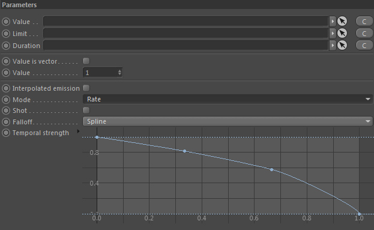
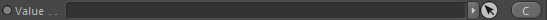
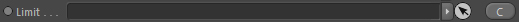
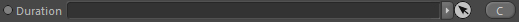
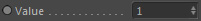
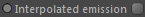
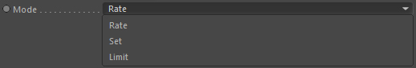
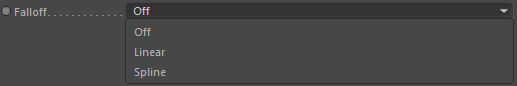
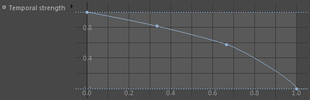

Parameters
Parameters

Value

Takes a node of type 'Value' and is the setting for an emission rate.
If no Value node is linked the 'Value' Setting is used instead.
Limit

Takes a node of type Value and is the setting for limiting the resulting value of the emission.
Example:
If you are using a grid emitter to emit smoke into a grid channel and you don't want the values to ever get bigger than a certain amount you would set a limit within the linked Value node here. This node is optional. The 'Mode' must be set to 'Limit'.
If you are using a grid emitter to emit smoke into a grid channel and you don't want the values to ever get bigger than a certain amount you would set a limit within the linked Value node here. This node is optional. The 'Mode' must be set to 'Limit'.
Duration

Takes a duration node that defines how long the node operates that is using these emission settings. This node is optional.
Value is vector
Activate this if you are emitting into a vector channel. Because the value emitted should be a vector value then.
Otherwise it is assumed that a scalar (floating point) value is to be emitted.
Value

The scalar emission value.
Value
Only available if 'Value is vector' is activated.
The vector emission value.
Interpolated emission

Defines that emissions into a grid should be interpolated. This is a bit slower but yields smoother emissions.
Mode

Provides any emitter with informatin about how the values should be written (e.g. into a scalar channel).
Rate
Emitted values are added.
Set
Emitted values are overwriting old channel values.
Limit
Emitted values are added but use the linked limit.
Shot
Shot will enforce that the emitter using these settings will emit the values directly and not time integrated (not based on the current sub time step).
So deactivated the values are emitted per second and if activated per frame.
Falloff

This is a falloff that can be sampled by the emitter.
For example a grid emitter will use its defined Volume and the falloff range is from the inside to the surface of the volume.
None
No falloff is used.
Linear
A linear falloff is used.
Custom
Allows a user-defined falloff being used. Once set, a spline graph (Temporal Intensity) unhides in the node's attributes and can be used to define the falloff.
Temporal Strength

Only available if 'Falloff' is set to 'Custom'.
Allows to define a custom falloff curve.